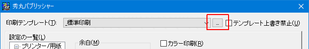
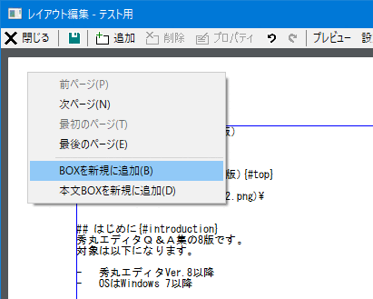
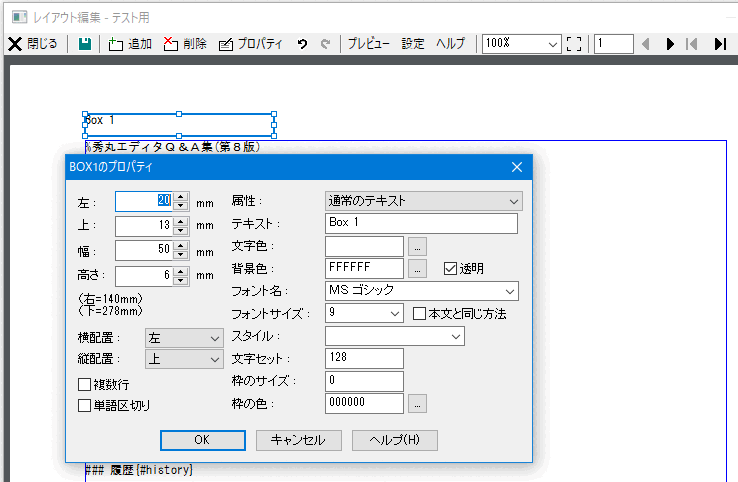
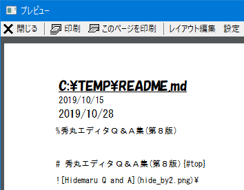
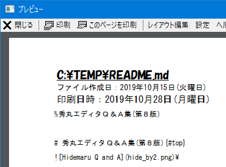
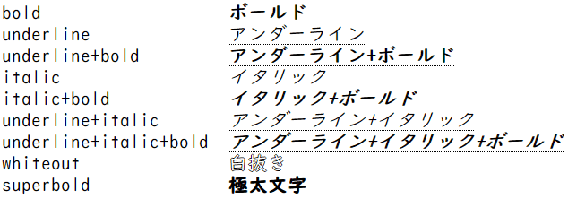
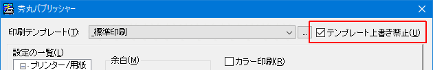

秀丸エディタ本体にも印刷機能がついていますが、機能は多くありません。
秀丸パブリッシャーを使う事で、
が可能になります。
秀丸パブリッシャーは、ランタイムライブラリが不要で、秀丸エディタ本体を「持ち出しキット」で使用している場合や、ストアアプリ版秀丸エディタでも使用可な Ver.5.00 が公開されていますが、秀丸エディタ Ver.8.00以上が必要です。
秀丸エディタ Ver.8.00未満の場合は、秀丸パブリッシャーのVer.4系を使用してください。ただし、「持ち出しキット」や「ストアアプリ版」では使用できません。
秀丸パブリッシャーのVer.4は、以下の2種類が存在します。
「64bit版」とありますが 32bit版秀丸エディタ/32bit OS でも使用可能で、 Windows Vista 以降は、32bit/64bit 秀丸エディタを問わずに、.NET Framework で作成した「64bit版」を使用する事を推奨しています。
以降の説明は、「Ver.5.02以降」を前提にしています。
秀丸パブリッシャーは、以下の場所から入手可能です。
秀まるおのホームページ - ソフトウェア - 秀丸パブリッシャー
2020/06/01 現在、以下のバージョンが公開されています。
秀丸パブリッシャー自体は、フリーソフトウェアです。秀丸エディタ Ver.8.00 以上で使用する事が推奨されています。
インストールファイルは、64bit/32bit共通です。

ダウンロードしたファイルを実行するとインストール先を聞かれます。

インストールが完了すると、秀丸エディタ本体の設定を変えるようメッセージが表示されるので、「動作環境」から設定の変更を行いましょう。

「ストアアプリ版」でも、使用するには「動作環境」から設定を変更する必要があります。
設定が多いですが、普通に印刷するだけなら、以下の2箇所を設定・確認後、印刷範囲、印刷部数を確認し、「印刷」ボタンを押すだけです。
(デフォルトでテンプレートは「_標準印刷」が選択されています。)
「設定の一覧」にある「プリンタ/用紙」を選択し、使用するプリンターと用紙サイズ、向きを確認・設定。

「設定の一覧」にある「本文BOX」を選択し、余白やフォント、フォントサイズ、カラー印刷など設定。
行番号や、ファイル名の印刷なども「本文BOX」の設定で可能です。
注意
「余白」等で数値を入力可能な箇所がありますが、キーボードから直接数値を入力して「Enter」を押すと、印刷が始まってしまいます。(IMEがOFFの場合。)
これは、デフォルトのボタンが「印刷」に設定されているからです。項目を移動するつもりで「Enter」を押してしまうと、印刷が始まってしまうので注意してください。
ファイル名の表示や、ページ番号の印刷も「本文BOX」の設定で可能ですが、
等の場合は、テンプレートを編集する事で可能になります。
秀丸パブリッシャーで印刷を行うには、「テンプレート」を作成し指定する必要があります。 Wordなど、ワープロソフトと違い、印刷対象のファイル内に印刷設定を保存する事ができないため、印刷するテキストと、印刷設定を記録する「テンプレート」は別のファイルになります。
つまり指定されたテンプレートに合わせ、本文を印刷する事になります。
「テンプレート」には、用紙内に「BOX」という印刷エリアを配置し、設定する必要があります。
「BOX」は通常の「BOX」と「本文BOX」の2種類あり、配置は「レイアウト編集」で行います。
「テンプレート」には、「本文BOX」がデフォルトで配置され、削除はできません。「本文BOX」は印刷を実行するファイルの内容が挿入される場所なので、必ず1個必要になります。 (新規でテンプレートを作成すると、「本文BOX」がデフォルトで配置されます。)
通常の「BOX」には、記述した内容が、そのまま表示/印刷されます。ワープロでいうところの、ヘッダー/フッターのような使い方になります。固定された文字列だけでなく、ページ番号や、ファイル名、フルパス、日時などが設定できます。
では、テンプレートを実際に作成・編集してみましょう。
テンプレート名が表示されている箇所の横にある、「…」ボタンを押して、テンプレートの一覧画面を表示させます。

この画面で、テンプレート新規作成、コピー、削除等が可能です。今回は"_標準印刷"をコピーして、"テスト用"という名前でテスト用のテンプレートを作り、編集していきます。

テンプレートは、用紙の上から順番に
という構成で作成します。
まずは、用紙と、余白を設定してください。
「レイアウト編集」ボタンを押すと、編集画面が開きます。初期状態では、マージンいっぱいまで、本文BOX が配置されているだけです。
他のBOXを配置するために、本文ボックスの高さを適当に変えて、BOXを配置する場所を作ります。 BOXは、重ねる事が可能なので、ずらさないと印刷時に重なってしまいます。

ファイル名表示用のBOXを追加します。新規のBOXを追加する方法は以下になります。
余白部分の右クリックメニュー

編集画面のツールバー
「BOXを新規に追加」を選択すると、レイアウト編集画面に「BOX」が追加されます。
BOXを選択しダブルクリックすると、プロパティが開き、フォントや表示する内容などを設定する事ができます。プロパティ画面の設定に関しての詳細は「ヘルプ」を参照の事。

今回はファイル名を表示するので、「属性」を「ファイル名(フルパス)」にし、フォントやサイズ、スタイルは、好みにあわせて設定を行います。

設定後、「OK」ボタンを押すと、設定内容に合わせBOXの表示が変わるので、設定内容の確認ができます。
「左」と「上」で座標を、「幅」と「高さ」でサイズの指定が可能ですが、マウスを使用しBOX自体を動かしたり、サイズを変更する事も可能です。
同様に、ファイルの作成日時、印刷日時、ページ番号用のBOXを追加していきます。
「属性」をそれぞれ
に設定してください。
ファイルの作成日時、印刷日を選択した場合、書式に「YYYY/MM/DD(W) hh:mm:ss」がセットされます。書式に指定されている文字の詳細は、「ヘルプ」ボタンを押すと表示されるヘルプで、確認する事ができます。
ここでレイアウト編集画面を閉じ、プレビューで確認を行います。
"ファイルの作成日時"と"印刷日時"を追加しましたが、ぱっと見でどちらが何の日時なのかわかりません。

そこで、各日時の前に"ファイル作成日："と"印刷日時："という文字を追加し、年月日の表示も変更します。

年月日の表示を変更するには、「書式」を変更します。
変更前の「書式」 YYYY/MM/DD(W) hh:mm:ss
変更後の「書式」 YYYY年MM月DD日（W曜日）文字を追加する方法は、いくつかあります。(例として「ファイルの作成日時」の場合)
"ファイルの作成日時"を表示しているBOXの前に新たにBOXを追加し、「属性」は“通常のテキスト”、「テキスト」に“ファイル作成日：”を指定する。
BOXのプロパティにある、「属性」はそのままで、「書式」を変更する。
変更前の「書式」 YYYY年MM月DD日（W曜日）
変更後の「書式」 ファイル作成日：YYYY年MM月DD日（W曜日）BOXのプロパティにある、「属性」を“通常のテキスト”とし、「テキスト」を変更する。
変更後の「テキスト」 ファイル作成日：%timestamp%「テキスト」中に「属性」の内容を取り込みたい場合は、「属性を示す文字列」を%で囲みます。(例:%filename%)
%で囲む場合は、「属性を示す文字列」は全て小文字で記述する必要があります。
OK：%filename%
NG：%FILENAME%
NG：%FileName%| 属性 | 属性を示す文字列 |
|---|---|
| ファイル名（フルパス） | filename |
| ファイル名 | basename |
| ディレクトリ名 | directory |
| ページ番号 | pagenum |
| 時間 | date |
| タイムスタンプ | timestamp |
「属性」が“通常のテキスト”の場合、「テキスト」の内容が、「属性を示す文字列」と一致してしまうと、その内容が表示されてしまいます。 (「属性」“通常のテキスト”で、「テキスト」が filename だと、フルパスが表示される)
大文字小文字は無視、前後の空白も無視されるので、FileName 等でも一致してしまいます。空白以外の文字があると大丈夫です。
テキストが「filename」や「FILENAME」だと フルパスに変換される。
テキストが「filename:%filename%」だと問題ない。「時間」や「タイムスタンプ」の場合、表示される書式は、一度も書式を設定したことのない場合はデフォルト値(「YYYY/MM/DD」)が、以前書式を設定したことがある場合は、その書式が使用されます。
後は実際に印刷かプレビューで結果を確認し、修正箇所があれば、再度テンプレートを修正してください。
以上、簡単ですがテンプレート作成例です。今回、本文BOXは1個でしたが、2個にして、冊子印刷も可能です。詳細は秀丸パブリッシャーのヘルプを参照してください。
BOX のスタイルについて
BOXで指定可能なスタイルは以下になります。

太文字、イタリック、下線は重複して指定することが可能です。
テンプレートファイルですが、一時的な設定のつもりで設定を変えてしまうと、その設定が保存されてしまいます。
(例えば、フォントの設定等)
印刷 → 印刷ダイアログ開く → 一時的なつもりでフォントを変更 → 印刷実行という作業を行うと、変更内容はテンプレートに保存されます。
設定変更を行っても、テンプレートに保存しないようにするには、「テンプレート上書き禁止」をチェックしてください。

現状、BOXではUnicode特有の文字を指定できません。Shift_JISに含まれる文字のみ表示可能です。
ただし、「属性」をファイル名にした場合(フルパスも含む)は、ファイル名にUnicode特有の文字があっても正常に表示されます。
テンプレートの保存場所は、「秀丸パブリッシャー」のダイアログから確認できます。
「印刷」を実行し、秀丸パブリッシャーのダイアログを表示させます。ダイアログ左上のアイコン部分をクリックすると、メニューが表示されるので「設定」を選択します。
ストアアプリ版の場合：「最新バージョンの確認」はありません。

「秀丸パブリッシャーの設定」ダイアログが表示され、テンプレートを保存してあるフォルダが表示されます。

テンプレートをバックアップする場合は、このフォルダを保存するようにしてください。